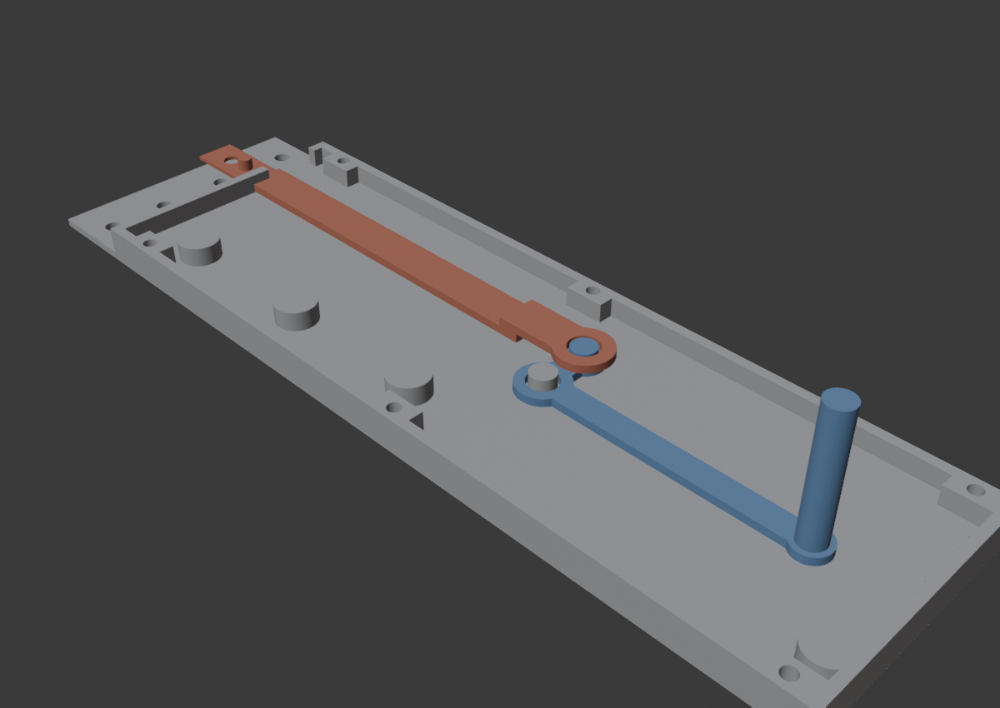
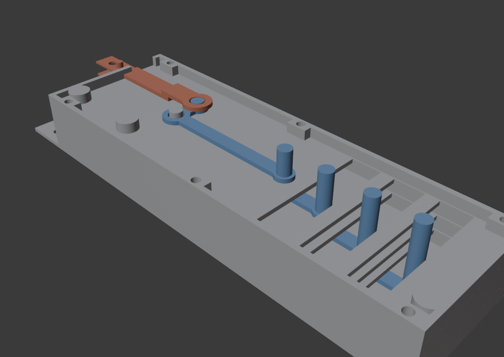
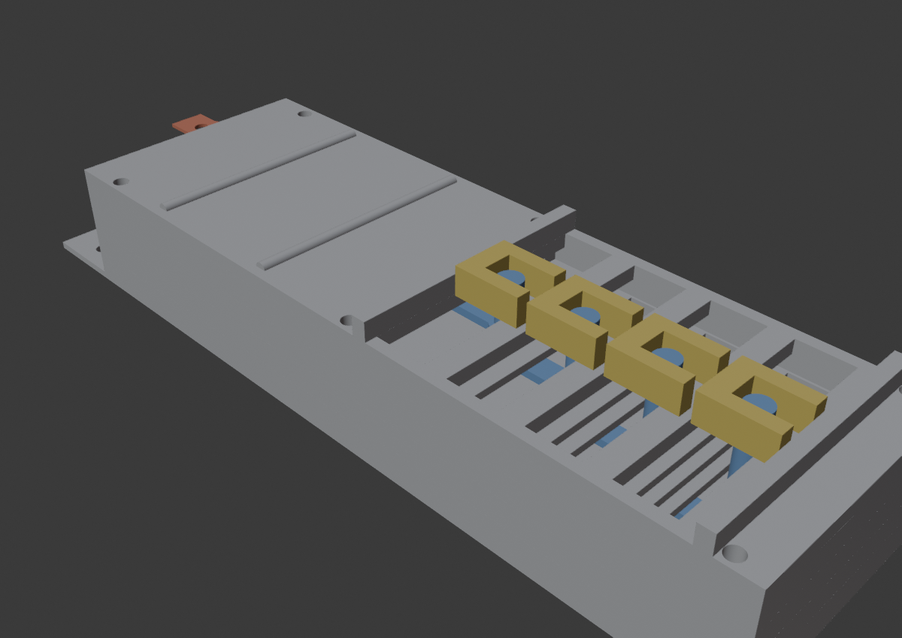
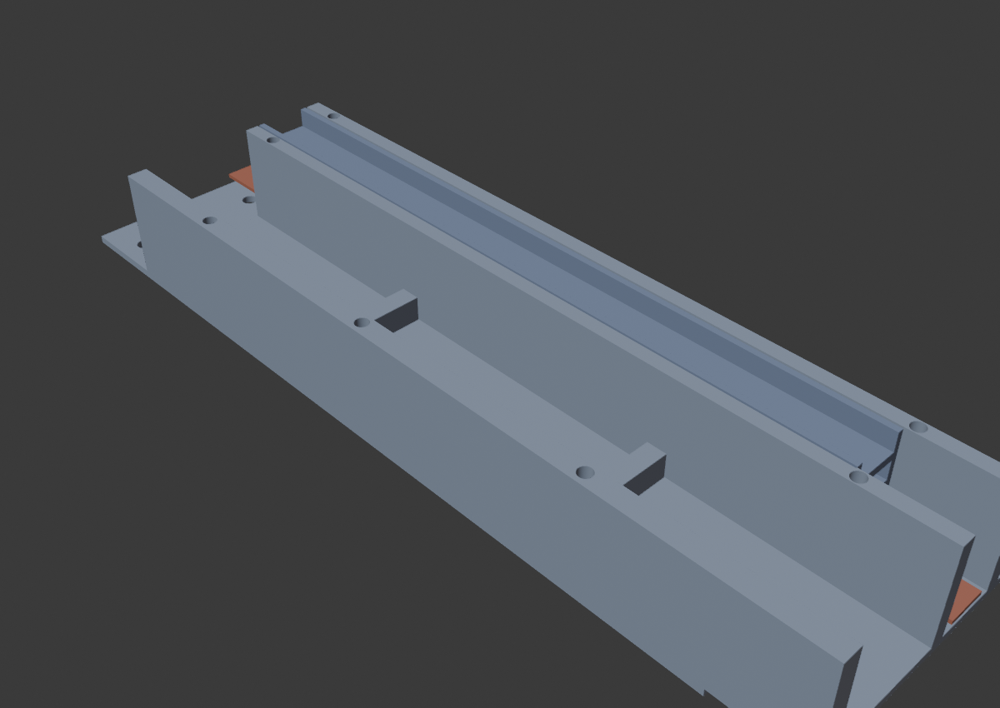
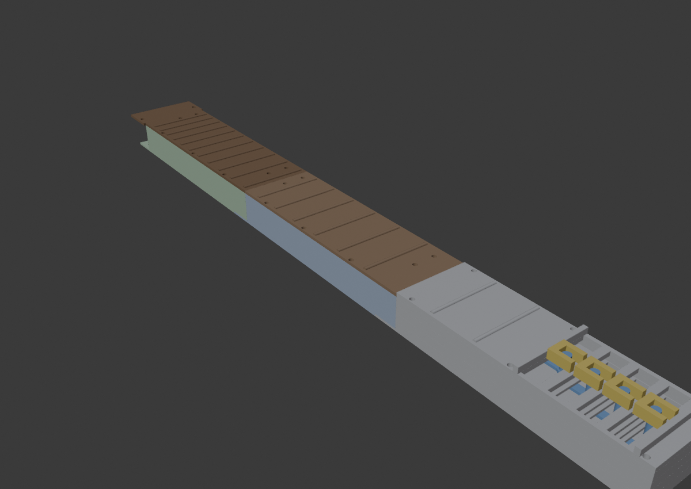

Гриф = 3 секции по 160 мм (всего 480, мензура 650, лады на настоящих позициях). Секция-1 — «моторная голова» без мотора: в ней 4 плеча-кулисы и 4 тележки-пальца. Секции 2 и 3 — «туннели»: по ним к секции-1 бегут 4 ленты-тяги от моторов в корпусе.
31_gitara_sec1_plity (4 плиты),
32_gitara_sec1_meh (палуба + механика), 33_gitara_sec2,
34_gitara_sec3. Для столов 33 и 34 включи в слайсере
поддержки «только от стола» — у дна секций стыковой вырез нависает
на 1.5 мм. Остальное — без поддержек.| Деталь | Сколько | Откуда |
|---|---|---|
| Плиты секции-1: дно P0 (с полкой на юг), межэтажки P1–P3 | 4 | стол 31 |
| Палуба P4 (канал тележек + лады) | 1 | стол 32 |
| Плечо-кулиса (диск с дыркой + длинное плечо со штырём вверх + короткое со стадом) | 4 | стол 32 |
| Спица-голова (лента с кольцом на ступеньке, хвост с защёлкой) | 4 | стол 32 |
| Тележка-палец (с вилкой-пазом на юг) | 4 | стол 32 |
| Дно секции-2 / секции-3 | 1+1 | столы 33/34 |
| П-рейка (жёлоб ленты) | 8 (по 4) | столы 33/34 |
| Фретборд секции-2; фретборд секции-3 с языком на юг | 1+1 | столы 33/34 |

Положи дно P0 полкой на юг (полка — тонкий выступ, он потом зайдёт под секцию-2). На плите торчит стад оси — надень на него плечо-0 диском. Длинное плечо смотрит на юг (вдоль грифа), его высокий штырь — вверх. На стад короткого плеча (у жёлоба) надень спицу-0 кольцом: её тело ляжет в жёлоб, ступенька поднимает кольцо над плечом, а хвост с защёлкой уйдёт на юг за край секции.

Накрой этаж межэтажкой P1: высокий штырь плеча-0 пройди в её дуговую прорезь (штырь будет ездить по ней). На стад P1 — плечо-1, на него спицу-1. Дальше так же: P2 + плечо-2 + спица-2, P3 + плечо-3 + спица-3. Каждая следующая прорезь пропускает ВСЕ нижние штыри.

Накрой стопку палубой P4 (лады сверху, канал тележек поперёк). Все 4 штыря плеч выйдут в общий канал. Опусти 4 тележки в канал вилками на юг — каждая вилка садится на свой штырь. Тележки стоят вплотную друг к другу (шаг 16 мм) и ездят каждая от своего плеча.
Стяни стопку 6 винтами М3×30 через приливы по бокам (3 пары).

В дно секции-2 уложи стопкой 4 П-рейки (жёлобом вверх) — они встают в карман дна друг на друга: подошва каждой следующей закрывает жёлоб предыдущей. По этим жёлобам поедут ленты. То же самое — с секцией-3.
deka.html, шаг «Ленты»).
Накрой каждую секцию фретбордом (лады сверху): его язычок с 45°-скосами лёгонько прижмёт верхнюю рейку/ленту. Прикрути 7 винтами М3×10: 4 — в стенки жёлоба (по 2 с каждого конца), 3 — вдоль западного борта. Винты нарезаются сами, позиции подобраны между ладами.
deka.html).Состыкуй секции на столе: полка юга нижней секции заходит ПОД вырез севера следующей («бутерброд»), 4 канала совпадают. Прошей каждый стык 4 винтами М3×8 снизу — винт проходит нижнюю полку насквозь и нарезается в верхнюю. Гриф из трёх секций готов.
manual/deka.html.Гитара-тренажёр · гриф ·
файлы: gitara_sec1.py, gitara_sec2.py, сцена
Гитара_секция1.blend, инструкция — manual/grif.html